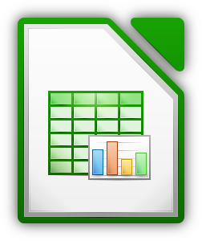

TIC 2021. Tecnología Web
1 - Creación de documentos en LibreOffice Calc
C1-1-01. Creación de libros en LibreOffice Calc
C1-1-02. Navegación y selección en libros de LibreOffice Calc
C1-1-04. Guardar documentos en LibreOffice Calc
2 - Edición y formato de celdas, filas, columnas y hojas en LibreOffice Calc
C1-2-01. Relleno automático y listas personalizadas en LibreOffice Calc
C1-2-02. Pegado especial en LibreOffice Calc
C1-2-03. Mostrar y ocultar hojas, filas y columnas en LibreOffice Calc
C1-2-04. Formato de celdas en LibreOffice Calc
3 - Formulación y funciones básicas en Calc
C1-3-01. Cálculos aritméticos en LibreOffice Calc
C1-3-02. Funciones básicas en LibreOffice Calc
C1-3-03. El asistente para funciones de LibreOffice Calc
C1-3-04. Referencias relativas y absolutas en fórmulas de LibreOffice Calc
4 - Paginación e impresión en Calc
C1-4-01a. Imprimir contenido en una sola página en LibreOffice Calc
C1-4-01b Imprimir documentos largos en LibreOffice Calc
C1-4-01c. Trabajar con intervalos de impresión en LibreOffice Calc
C1-4-02. Formato de página en LibreOffice Calc
C1-4-03. Repetir títulos al imprimir en LibreOffice Calc
C1-4-04. Encabezado y pie de página en LibreOffice Calc
C1-4-05. Estilos de página personalizados en LibreOffice Calc
C1-4-06. Creación de documentos PDF accesibles en LibreOffice Calc
5 - Imágenes y objetos de dibujo en Calc
C1-5-01. Inserción de imágenes en LibreOffice Calc
C1-5-02. Inserción de objetos de dibujo en LibreOffice Calc
C1-5-03. Trabajo con cuadros de texto en LibreOffice Calc
6 - Herramientas de revisión y autocorrección en Calc
C1-6-02. Cambiar el idioma del documento en LibreOffice Calc
C1-6-03. Corrección ortográfica en LibreOffice Calc
C1-6-04. Opciones de autocorrección en LibreOffice Calc
7 - Creación de diagramas en Calc
C1-7-01. Insertar diagramas en LibreOffice Calc
C1-7-02a. Editar diagramas en LibreOffice Calc
C1-7-02b. Editar diagramas en LibreOffice Calc
8 - Ordenación y filtrado de datos en Calc
C1-8-01. Ordenación rápida en LibreOffice Calc
C1-8-02. Ordenación por varios criterios en LibreOffice Calc
C1-8-03. Filtro automático en LibreOffice Calc
C1-8-04. Filtro estándar en LibreOffice Calc
Calc Inicial

Creación de documentos en LibreOffice Calc
Iniciar el programa LibreOffice Calc.
Identificar el entorno de trabajo de Calc y sus componentes.
Adaptar la superficie de trabajo a sus preferencias y necesidades.
Conocer las características del formato ODF nativo de Calc y ser consciente de posibles problemas de compatibilidad con otros formatos.
Abrir, modificar y guardar documentos tanto en formato ODF como en otros formatos de uso frecuente.
Edición y formato de celdas, filas, columnas y hojas en LibreOffice Calc
Cortar, copiar y pegar datos de las hojas.
Autorelleno de celdas.
Opciones de pegado especial.
Formatear, ocultar y mostrar filas, columnas y hojas.
Mover y copiar hojas entre libros.
Buscar y reemplazar datos en el libro.
Formulación y funciones básicas en Calc
Conocer los operadores aritméticos que nos permitirán efectuar cálculos.
Hacer referencia a las celdas, de forma que los resultados de los cálculos se actualicen dinámicamente al cambiar los datos originales.
Conocer qué son las funciones, y como utilizarlas.
Familiarizarnos con las funciones de uso más habitual..
Usar el asistente para la escritura de funciones provisto por Calc
Paginación e impresión en Calc
Configurar el formato de página estableciendo márgenes, tamaño, orientación, bordes y fondos..
Configurar encabezados y pies de página que se repitan en todas las páginas..
Insertar numeraciones automáticas de página y otros campos habituales..
Repetir filas y columnas en todas diferentes páginas de libros de gran tamaño.
Crear y aplicar diferentes estilos de página en las hojas del libro.
Establecer diferentes opciones de impresión.
Exportar en formato PDF, atendiendo a criterios de accesibilidad.
Reconocer los problemas de compatibilidad con Excel para evitarlos cuando sea necesario.
Imágenes y objetos de dibujo en Calc
Usar la Galería de imágenes prediseñadas.
Insertar imágenes en los documentos.
Cambiar el tamaño y la ubicación de las imágenes.
Editar otras propiedades de las imágenes.
Insertar, editar y agrupar elementos de dibujo..
rabajar con títulos gráficos (Fontwork).
Herramientas de revisión y autocorrección en Calc
Instalar correctores ortográficos adicionales..
Establecer el idioma predeterminado del libro.
Activar y desactivar la corrección ortográfica automática..
Usar diccionarios de sinónimos.
Configurar opciones de formato y corrección automática.
Creación de diagramas en Calc
Conocer los diferentes tipos de diagramas disponibles en Calc.
Crear diagramas que representen gráficamente los datos de la hoja.
Añadir y personalizar los diferentes elementos del diagrama.
Ordenación y filtrado de datos en Calc
Ordenar listas de datos con diferentes criterios y opciones.
Filtrar los datos por varios criterios y opciones especiales.
Una introducción al conocimiento de las expresiones regulares.
Este curso ha sido producido por
AIMME
con contenidos elaborados por
ITI
, contando con la financiación de
IMPIVA
, y fue cedido con licencia
Creative Commons BY-SA
al lamentablemente extinto
PROYECTO MORFEO-FORMACION.